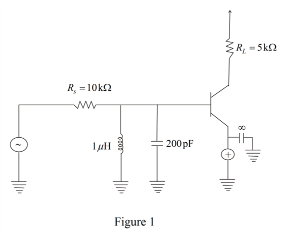

The value of collector current is,
Determine the value of emitter current.
Substitute 1 mA for  and 100 for
and 100 for .
.
Determine the value of emitter resistance.
Draw the following circuit diagram.

The value of collector current is,
Determine the value of emitter current.
Substitute 1 mA for and 100 for.
Determine the value of emitter resistance.
Determine the open loop gain of amplifier.
Substitute for and  for.
for.
Determine the value of resistance .
.
Substitute 200 for  and
and  for.
for.
Determine the value of total capacitance.
Substitute 10 pF for, 200 pF for C, for and 1 pF for .
Determine the value of resonance frequency.
Substitute for L and for C.

Therefore, the value of resonant frequency is .
Substitute for  ,
, for
for  and for .
and for .
Therefore, the value of center frequency gain is .
Determine the value of bandwidth.
Substitute for , for  and 409 pF for
and 409 pF for .
.
Therefore, the value of bandwidth is.
Determine the value of quality factor.
Substitute for  and for BW.
and for BW.
Therefore, the value of quality factor is.